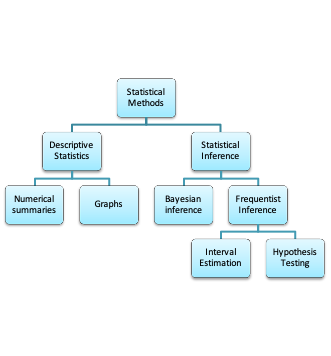
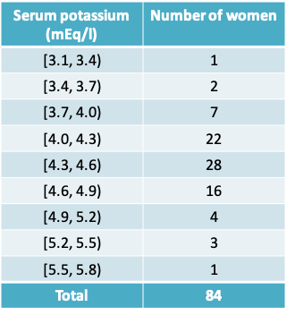

3 Lecture 3: Central Limit Theorem and Inference for Means
3.1 Mean and Standard Deviation
3.1.1 Descriptive statistics vs. Inferential Statistics

- Descriptive statistics help to describe the characteristics of the sample gathered
- Inferential statistics help to use these characteristics to draw conclusions about the target population
3.1.3 Descriptive statistics: Notation
- We use capital letters to denote a variable, and small letters to denote the values it takes. For example,
- X = FEV (the variable),
- x = 0.793 litres (an observed value)
- \(\sum_{i=1}^nx_i\) means the sum of the observed values x on a sample of size n. \(x_i\) is the observed value for the \(i^{th}\) subject in the sample
- The next few slides list common measures of central tendency and spread


3.1.6 Summary of FEV variable
For a symmetric distribution, the median=mean.
The values above suggest that the distribution of FEV may be slightly skewed to the right as the mean is higher than the mode
3.1.7 Robustness
- A statistic is said to be robust if the value of the statistic is relatively unaffected by changes in a small portion of the data, even if the changes are dramatic ones. The median is a robust statistic, but the mean is not robust because it can be greatly shifted by changes in even one
- Example: In the FEV dataset, I replaced the last observation in the dataset of 3.211 by 6.211, an extreme value. This resulted in increasing the mean from 2.637 to 2.641 but the median remained at 2.548
- If the frequency distribution is skewed, both measures are pulled toward the longer tail, but the mean is usually pulled farther than the median
3.1.8 Mean vs. Median
- In some situations the mean makes very little sense. Suppose, for example, that the observations are survival times of cancer patients on a certain treatment protocol, and that most patients survive less than 1 year, while a few respond well and survive for 5 or even 10 years. In this case, the mean survival time might be greater than the survival time of most patients; the median would more nearly represent the experience of a “typical” patient. Note also that the mean survival time cannot be computed until the last patient has died; the median does not share this disadvantage. Situations in which the median can readily be computed, but the mean cannot, are not uncommon in bioassay, survival, and toxicity studies
- An advantage of the mean is that in some circumstances it is more efficient than the median. Efficiency is a technical notion in statistical theory; roughly speaking, a method is efficient if it takes full advantage of all the information in the data. Partly because of its efficiency, the mean has played a major role in classical methods in statistics
3.1.9 Quantiles
- Quantiles (also known as percentiles) help to demarcate different points of the distribution of a continuous variable
- The q% quantile is the number below which q% of observed values lie
- For example
- The 10% quantile of FEV is the value below which 10% of FEV values lie = 1.612
= \(0.1n^{th}\) lowest value of FEV
- The 10% quantile of FEV is the value below which 10% of FEV values lie = 1.612


3.1.13 Variance and Standard Deviation
- The standard deviation is more commonly reported than the variance because it is in the same units as the variable X and the mean of X
- Notice that we use the sum of the squared deviations. This is because the sum of the deviations themselves will always be 0. We need a way to get rid of the signs of the deviations. Alternatives to taking the squares include taking the absolute value. But squares are more popular because of their mathematical properties
- Why do we divide by n-1 rather than n? We do so because we are measuring the deviation from a quantity that is also defined using the sample, i.e. \(\bar x\). It is as if we must penalize the sample size to correct for this. If we knew the true population mean (µ), then we would divide by n instead:
\[Population\space variance = \frac{\sum_{i=1}^n(x_i-\mu)^2}{n}\]
3.1.14 Why n-1 rather than n?\(^*\)
- Suppose the population has only 4 members {1,2,3,4}
- The true mean is \(\frac{1+2+3+4}{4} = 2.5\)
- The true variance is \(\frac{(1−2.5)^2+(2−2.5)^2+(3−2.5)^2+(4−2.5)^2}{4}=1.25\)
- Now suppose we cannot view the whole population, but instead take a sample of size two. On the next slide, all possible samples are listed together with mean, the correct calculation for the sample variance dividing by n-1 and the incorrect calculation dividing by n. Each sample is equally likely to occur, assuming we are sampling with replacement from the population
- Notice that the incorrect expression for the sample variance results in an underestimate on the average across samples
| Sample | Sample mean | Correct Sample variance | Underestimated Sample variance |
|---|---|---|---|
| (1,2) | 1.5 | 0.50 | 0.250 |
| (1,3) | 2.0 | 2.00 | 1.000 |
| (1,4) | 2.5 | 4.50 | 2.250 |
| (2,3) | 2.5 | 0.50 | 0.250 |
| (2,4) | 3.0 | 2.00 | 1.000 |
| (3,4) | 3.5 | 0.50 | 0.250 |
| (2,1) | 1.5 | 0.50 | 0.250 |
| (3,1) | 2.0 | 2.00 | 1.000 |
| (4,1) | 2.5 | 4.50 | 2.250 |
| (3,2) | 2.5 | 0.50 | 0.250 |
| (4,2) | 3.0 | 2.00 | 1.000 |
| (4,3) | 3.5 | 0.50 | 0.250 |
| (1,1) | 1.0 | 0.00 | 0.000 |
| (2,2) | 2.0 | 0.00 | 0.000 |
| (3,3) | 3.0 | 0.00 | 0.000 |
| (4,4) | 4.0 | 0.00 | 0.000 |
| Average across samples | 2.5 | 1.25 | 0.625 |
\(^*\)Lawrence Joseph’s notes
3.2 Central Limit Theorem
3.2.1 Example 1: Serum cholesterol in children
- Though we are more conscious of the relationship between cholesterol level and heart disease in adults, high levels of cholesterol are also a concern in children, particularly if they have risk factors like family history or obesity
- The American Academy of Pediatrics now recommends cholesterol testing in certain age groups
- To determine if a child is at risk of heart disease, we would need to compare the observed cholesterol level with the standard expected in a normal child. How large a sample size do we need to determine the normal level?
- The serum cholesterol levels (Y) of 12- to 14-year-olds follow a normal distribution with mean μ=155mg/dl and standard deviation σ=27 mg/dl
- You wish to estimate the true mean serum cholesterol in this population by using a sample of observations:
- Should you prefer a sample of n=10, 30 or 100 observations?

3.2.2 The sampling distribution of \(\bar Y\)
- The sample mean can be used, not only as a description of the data in the sample, but also as an estimate of the population mean μ.
- It is natural to ask, “How close to μ is \(\bar y\)?” We cannot answer this question for the mean \(\bar y\) of a particular sample, but we can answer it if we think in terms of the random sampling model and regard the sample mean as a random variable \(\bar Y\).
- The question then becomes: “How close to μ is \(\bar Y\) likely to be?” and the answer is provided by the sampling distribution of \(\bar Y\) - that is, the probability distribution that describes sampling variability in \(\bar Y\)
- In order to visualize the sampling distribution of \(\bar Y\), imagine repeated samples of size n are drawn from a population with fixed mean µ and standard deviation σ. The variation of the \(\bar y's\) among the samples is specified by the sampling distribution of \(\bar Y\)


3.2.7 Example 1
- We notice that the mean of the sampling distribution gets very close to µ even with smaller sample sizes. This only improves as n increases
- As n increases, there is a very clear decrease in the standard deviation of the means across a 100 samples
- Finally, we notice that the shape of the sampling distribution is increasingly like a normal distribution as n increases
3.2.8 The sampling distribution of \(\bar Y\)
- Mean: The mean of the sampling distribution of \(\bar Y\) is equal to the population mean, i.e. \(E(\bar Y)=\mu_{\bar Y}=\mu\)
- Standard deviation: The standard deviation of the sampling distribution is equal to the population standard deviation divided by the square root of the sample size, i.e. \(SD(\bar Y)=\sigma_{\bar Y}=\frac{\sigma}{\sqrt n}\). Note that this implies the \(Variance(\bar Y)=\sigma^2_{\bar Y}=\frac{\sigma^2}{n}\)
- Shape
- If the population distribution of Y is normal, then the sampling distribution is normal, regardless of the sample size n.
- Central Limit Theorem: If n is large, then the sampling distribution is approximately normal, even if the population distribution of Y is not normal
3.2.9 Central Limit Theorem
- From the text by Moore and McCabe:
“The sampling distribution of \(\bar Y\) is normal if the underlying population itself is normal.
What happens when the population distribution is not normal? It turns out that as the sample size increases, the distribution of \(\bar Y\) becomes closer to a normal distribution. This is true no matter what the population distribution may be, as long as the population has a finite standard deviation σ. This famous fact of probability theory is called the central limit theorem. For large sample size n, we can regard \(\bar Y\) as having the \(N\left(\mu,\frac{\sigma}{\sqrt n}\right)\) distribution”
3.2.10 Example 1
- Applying the Central Limit Theorem, we can say that the sampling distribution of the mean serum cholesterol is:
- \(N\left(\mu_{\bar Y}=155,\sigma_{\bar Y}=\frac{27}{\sqrt {10}}=8.54\right)\) when n=10
- \(N\left(\mu_{\bar Y}=155,\sigma_{\bar Y}=\frac{27}{\sqrt {30}}=4.93\right)\) when n=30
- \(N\left(\mu_{\bar Y}=155,\sigma_{\bar Y}=\frac{27}{\sqrt {100}}=2.7\right)\) when n=100
- \(N\left(\mu_{\bar Y}=155,\sigma_{\bar Y}=\frac{27}{\sqrt {1000}}=0.85\right)\) when n=1000
Therefore, applying the rules pertaining to the normal distribution, we know that roughly 95% of the sampling distribution lies in the following ranges depending on the size of n:

3.2.13 Example 2: Central Limit Theorem in action
- What is the average time taken across the 50 students in the class?
- R code to replicate
x1 = rnorm(50,4,1) # walk to bus stop x2 = runif(50,4,16) # wait for bus x3 = rnorm(50,20,2) # bus ride x4 = rgamma(50,shape=3/2,scale=2) # trudge up hill
par(mfrow=c(2,3)) hist(x1);hist(x2);hist(x3);hist(x4) hist(x1+x2+x3+x4,xlab=“Sum for 50 students”,main=““) hist((x1+x2+x3+x4)/4,xlab=”Mean for 50 students”,main=““)
3.3 Confidence intervals for means
3.3.1 Confidence interval estimation for a single mean
- The construction of a confidence interval relies on the principal of the central limit theorem
- If, we can reasonably assume that the sample mean follows a normal distribution with mean µ and standard deviation \(\frac{\sigma}{\sqrt n}\)
- Then, across repeated samples, 95% of samples’ means \((\bar x's)\) lie in the interval \(\left(\mu-2\frac{\sigma}{\sqrt n},\mu+2\frac{\sigma}{\sqrt n}\right)\)
- This implies that 95% of the intervals \(\left(\bar x-2\frac{\sigma}{\sqrt n},\bar x+2\frac{\sigma}{\sqrt n}\right)\) will include \(\mu\). This interval is called the 95% confidence interval for µ
- More generally, \((1-\alpha)\)% of the intervals \(\left(\bar x-Z_{(1-\frac{\alpha}{2})}\frac{\sigma}{\sqrt n},\bar x+Z_{(1-\frac{\alpha}{2})}\frac{\sigma}{\sqrt n}\right)\) will include \(\mu\).
- This interval is called the (1-α)% equal-tailed confidence interval for µ, where \(Z_{(1-\frac{\alpha}{2})}\) is the (1- α/2) quantile of the standard normal distribution
- Equal-tailed refers to the fact that the probability of (1-α) is divided equally in the two tails of the distribution
- Notice that the 95% or (1-α)% in the definition refers to a percentage across repeated experiments
- We cannot say whether the 95% confidence interval estimated from the sample at hand is one of the ones that captured the true value of µ or not
- The population standard deviation (σ) is seldom known and must be substituted by the sample standard deviation (s)
- Does the assumption of 95% confidence still hold? It turns out that it does but we must replace the quantile \(Z_{(1-\frac{\alpha}{2})}\) from the normal distribution by the \(t_{(1-\frac{\alpha}{2})}\) quantile from the Student’s t-distribution (or t-distribution for short)
- The resulting expression for the confidence interval is given by:
\[\left(\bar x-t_{(1-\frac{\alpha}{2}),n-1}\frac{s}{\sqrt n},\bar x+t_{(1-\frac{\alpha}{2}),n-1}\frac{s}{\sqrt n}\right)\]
where \(t_{(1-\frac{\alpha}{2}),n-1}\) is the (1- α/2) quantile of the t-distribution with n-1 degrees of freedom
3.3.2 t-distribution

Image from Wikipedia
- The t-distribution was discovered by the British scientist W. S. Gossett who was employed by the Guiness Brewery.
- He published his work in 1908 under the pseudonym Student
- The t-distribution is a bell-shaped, symmetrically distribution over the range -∞ to ∞. It resembles the normal distribution, but has a higher standard deviation.
- The exact shape of the distribution depends on a quantity called the degrees of freedom (ν in the illustration). The higher the value of ν the closer it is to a normal distribution
Probability density function centred at 0
\[f(x|v) = \frac{\Gamma\left(\frac{v+1}{2}\right)}{\sqrt {v\pi}\Gamma\left(\frac{v}{2}\right)}\left(1+\frac{x^2}{v}\right)^{-\frac{v+1}{2}},-\infty<x<\infty\]
Mean=0
Variance=\(\frac{v}{v-2}\)
3.3.3 Example 1: Serum Potassium Concentration

- As part of a study of natural variation in blood chemistry, serum potassium concentrations were measured in 84 healthy women.
- The mean concentration was 4.36 mEq/l, and the standard deviation was 0.42 mEq/l.
- The table presents a frequency distribution of the data
- Calculate the standard error of the mean
- Construct a histogram of the data and indicate the intervals mean ± SD and mean ± SE
- Construct a 95% confidence interval for the population mean. Interpret this confidence interval
- Would this interval be suitable to define “reference limits” for serum potassium in healthy women, i.e. the limits within which we would expect to find 95% of healthy people?
- Suppose a similar study is to be conducted the following year among 200 women. What would you predict would be
- the SD of the new measurements?
- the SE of the new measurements?

3.3.5 Verifying assumptions behind the t-distribution confidence interval
- Does the central limit theorem hold?
- In other words, do at least one of the following conditions hold
- the data follow an approximately normal distribution?
- the sample size is large
- For the serum potassium example both conditions appear to hold
3.3.6 Example 1: Standard Error and 95% confidence interval
- The standard error of the mean (SE)
\(=\frac{SD}{\sqrt n}=\frac{0.42}{\sqrt {84}}=0.05\) mEq/l, after rounding - The 95% confidence interval
\(=\left(\bar x-t_{(1-\frac{\alpha}{2}),n-1}\frac{s}{\sqrt n},\bar x+t_{(1-\frac{\alpha}{2}),n-1}\frac{s}{\sqrt n}\right)\)
\(=(4.36 – t_{0.975,84-1} 0.05, 4.36 + t_{0.975,84-1} 0.05)\)
= (4.36 – 1.98 × 0.05, 4.36 + 1.98 × 0.05)
= (4.26, 4.46) mEq/l
3.3.7 Interpretation of the 95% confidence interval
- Assuming that the sample at hand is a random sample, there is a 95% probability that the procedure used to calculate the interval (4.26, 4.46) will capture the population mean serum potassium concentration
- It would not be correct to say: There is a 95% probability that the population mean serum concentration lies between 4.26 and 4.46 mEq/l
3.3.8 Confidence level
The higher the confidence level, the wider the confidence interval would be

qt(prob,df) is the R function that returns the t-distribution quantile
- Arguments provided are the cumulative probability and the degrees of freedom
3.3.10 Interpreting the confidence interval
- Would the 95% confidence interval be suitable to define “reference limits” for serum potassium in healthy women, i.e. the limits within which we would expect to find 95% of healthy people?
- No. The 95% interval attempts to captures the uncertainty in the mean of the distribution.
- In the expression for the confidence interval, if we replaced the standard error by the standard deviation, we would get the desired reference limits
3.3.11 Standard error vs Standard deviation
- Suppose a similar study is to be conducted the following year among 200 women. What would you predict would be
- the SD of the new measurements?
- the SE of the new measurements?
- Our best prediction for the SD would be the value in the smaller sample of 84, namely 0.42 mEq/l
- However, the SE of the new measurements would decrease from 0.05 to \(\frac{0.42}{\sqrt {200}}\) = 0.03 mEq/l
3.4 Confidence interval for the difference between two means
3.4.1 Example 2: Nck1 deficiency and adipogenesis
- Obesity results from an excessive expansion of white adipose tissue (WAT), which is still poorly understood from an etiologic-mechanistic perspective
- A study from the MUHC-RI reported on the role of the Nck1 adaptor protein during WAT expansion and in vitro adipogenesis
- Two outcomes of interest were body weight and adipose weight

- Nck1 wild type (Nck1+/+) and knock-out mice (Nck1-/-) were compared at baseline and at 16 weeks
- Two research questions of interest: Is there a difference in wild-type and knock-out mice in terms of
- Body weight
- Adipose weight
- What would be considered a meaningful change on these two outcomes?
- In order to apply the Central Limit Theorem we would ask:
- Is it reasonable to assume that body weight and adipose weight follow an approximately normal distribution?
- If not, is the sample size sufficiently large?
- The sample size is not large, so the approximate normality must hold to construct a t-distribution-based confidence interval

3.4.2 Confidence interval for the difference between means from two independent samples
The (1-α)% confidence interval comparing two means from independent samples is given by
\[\bar x_1-\bar x_2-t_{(1-\alpha/2),df}s_{diff},\bar x_1-\bar x_2+t_{(1-\alpha/2),df}s_{diff}\]
where

3.4.4 Calculating degrees of freedom of the t-distribution when variances are not equal
- The degrees of freedom can be set to min(n1-1, n2-1), which is a conservative value. This is a useful approach if you are doing the t-test by hand
- Alternatively, a computer program may use a more complex method called the Welch’s method or Satterthwaite’s method to calculate the degrees of freedom as follows:
\[\frac{(se_1^2+se_2^2)^2}{\frac{se_1^4}{n1-1}+\frac{se_2^4}{n2-1}},\]
where \(se_1 = se_1/\sqrt{n1}\) and \(se_2 = se_2/\sqrt{n1}\)
3.4.5 Example 2: Nck1 deficiency and adipogenesis
- Based on the sample estimates, and perhaps from information gathered previously, it may be reasonable to assume that the variance is the same in both groups being compared
- Since we are assuming that the variance is the same, it is reasonable to calculate a pooled variance that averages across both groups.
3.4.6 Calculating the pooled variance for body weight
- The pooled variance is given by
\[s_p^2=\frac{(n1-1)s_1^2+(n2-1)s_2^2}{n1+n2-2}=\frac{15*5.4*5.4+8*5.6*5.6}{16+9-2}=29.9\]
- Therefore the pooled standard deviation is given by the square root of 29.9 or \(s_p=5.5\)
- The value of \(s_{diff}=s_p\sqrt{\frac{1}{n1}+\frac{1}{n2}}=5.5\sqrt{\frac{1}{16}+\frac{1}{9}}=2.3\)
3.4.7 Confidence interval for difference in body weight
- The difference in mean body weight between Nck1+/+ and Nck1-/- mice is \(\bar y_1-\bar y_2=38.2-35.7=2.5\)
- 95% confidence interval for the difference in means is
\(\bar y_1-\bar y_2-t_{(1-\alpha/2),n1+n2-2}s_{diff},\bar y_1-\bar y_2+t_{(1-\alpha/2),n1+n2-2}s_{diff}\)
= (2.5 – 2.07 × 2.3, 2.5 + 2.07 × 2.3)
= (-2.3, 7.3)
3.4.8 Confidence intervals comparing the two groups

- The assumption of unequal variance results in a lower value for the degrees of freedom and would typically be more conservative
3.4.9 Interpreting the confidence interval
- As in the case of a single mean, we have 95% confidence in the procedure used to construct the interval.
- We cannot say if this interval based on our sample includes the true mean difference between Nck1 +/+ and Nck1 -/- mice
- Say we consider 5g to be a meaningful difference in body weight
- This implies, though the confidence interval includes 0, the upper limit crosses 5g suggesting we cannot eliminate the possibility there is a meaningful difference. Ideally, the study should be repeated to obtain a more precise estimate
- Say we consider a 0.5g to be a clinically meaningful difference in adipose weight
- The interval provides evidence for a statistically significant difference, but does eliminate the possibility that the difference may not be clinically meaningful difference as the lower limit lies below 0.5g
3.5 Sample size calculations
- Before collecting data for a research study, it is wise to consider in advance whether the estimates generated from the data will be sufficiently precise.
- It can be painful indeed to discover after a long and expensive study that the standard errors are so large that the primary questions addressed by the study cannot be answered.

3.5.2 Sample size calculation
- The method one uses for the sample size calculation depends on the plan for the statistical inference
- Accordingly, depending on whether you intend to report a hypothesis test, or a confidence interval or a Bayesian analysis, your method for sample size calculation may change
3.5.3 Sample size calculation for reporting a confidence interval
- This approach is relevant when we want to estimate a parameter within a certain precision, with a high level of confidence.
- For example, we might want to estimate
- mean change in body weight in mice within ± 2.5g of the true value with 99% confidence
- mean serum cholesterol in middle-aged men within ± 6mg/dL of its true value with 90% confidence
3.5.4 Example: Method for a single mean
- A medical researcher proposes to estimate the mean serum cholesterol level of a certain population of middle-aged men, based on a random sample of the population.
- He asks a statistician for advice. The ensuing discussion reveals that the researcher wants to estimate the population mean to within δ = ±6 mg/dl or less, with 95% confidence.
- Also, the researcher believes that the standard deviation of serum cholesterol in the population is probably about s=40 mg/dl.
- How large a sample does the researcher need to take?

3.5.6 Example: Method for a single mean
- The research question can be re-expressed as
“What is the sample size required to calculate a 95% confidence interval for the mean serum cholesterol which has half-width 6mg / dL?”
- Recall that the general expression for the (1- α)% confidence interval is
\[\bar x-t_{(1-\alpha/2),n-1}\frac{s}{\sqrt n},\bar x+t_{(1-\alpha/2),n-1}\frac{s}{\sqrt n}\]
- In other words, we need to find out how large n should be so that
\[t_{(1-\alpha/2),n-1}\frac{s}{\sqrt n}=\delta=6\]
- To solve this expression for n, we need to know the values of \(t_{(1-\alpha/2),n-1}\) and the value of s, the standard deviation
- Since \(t_{(1-\alpha/2),n-1}\) itself depends on n, we cannot know its value without n! We therefore, replace it by the normal quantile \(Z_{(1-\alpha/2)}\). In our example, \(Z_{(1-\alpha/2)}=1.96\)
- The value of s could be a guess value or determined from the literature or an earlier pilot study. In our example, s=40
- Therefore, we wish to solve
\[Z_{(1-\alpha/2)}\frac{s}{\sqrt n}=1.96\frac{40}{\sqrt n}=\delta=6\]
- This implies \(\sqrt n = Z_{(1-\alpha/2)}\frac{s}{\delta}=1.96\frac{40}{6}\)
- Or \(n = (1.96\frac{40}{6})^2 \approx 171\)
3.5.7 Alternative values of α, s and δ
| alpha | s | delta | n |
|---|---|---|---|
| 0.05 | 40 | 6 | 171 |
| 0.01 | 40 | 6 | 240 |
| 0.05 | 30 | 6 | 96 |
| 0.01 | 30 | 6 | 135 |
| 0.05 | 40 | 12 | 43 |
| 0.01 | 40 | 12 | 60 |
| 0.05 | 30 | 12 | 24 |
| 0.01 | 30 | 12 | 24 |
- By varying the values of α, s and δ we can see how they impact the sample size
- n increases if:
α decreases, s increases or δ decreases
- In practice, the sample size may be constrained by feasibility or cost. Using a table like this allows us to see how much precision we can ‘buy’ with the available sample size
3.5.8 Example: Sample size calculation for comparing two means
- Consider the study on body weight in Nck+/+ vs Nck-/- mice
- Lets say we wish to repeat the earlier study so that we can show more convincingly that there is a clinically meaningful difference
- Earlier in the lecture we found that the pooled standard deviation of the difference was \(s_p=5.5g\)
- We desire to ensure that the observed mean change lies within δ = ± 2.5 g of the true mean change with 95% confidence.
- What is the sample size required in each group (assuming the sample size is equal in both groups)?
3.5.9 Example: Comparison of two means
- To calculate the sample size required to estimate a 95% CI with adequate precision we need to solve
\(Z_{(1-\alpha/2)}s_{diff}=Z_{(1-\alpha/2)}s_p\sqrt{\frac{1}{n}+\frac{1}{n}}=\delta\)
or \(1.96\times 5.5\times \sqrt{\frac{1}{n}+\frac{1}{n}}=2.5\) - This implies \(\sqrt n =1.96\frac{5.5\times\sqrt 2}{2.5}\)
- Or \(n = 2(1.96\frac{5.5}{2.5})^2 \approx 37\) mice in each group